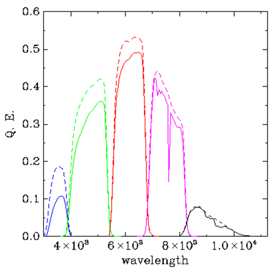

- HI line flux density = 0.67 Jy km/s
- Heliocentric radial velocity = 1705 km/s
- HI line width (at 50% of peak) = 87 km/s
-- How can we derive the HI mass of this galaxy? What is it?
-- What other properties of this galaxy can you calculate? What more do we know about this galaxy? Hint: it won't be easy.... you will probably have to ask for help (we won't mind...)
- Right ascension and declination: R.A., Dec.
- J2000.0
- Galactic longitude and latitude: L, B
- Supergalactic longitude and latitude: SGL, SGB
- Supergalactic cartesian: SGX, SGY, SGX
|
-- Remind yourself of the meaning of the terms apparent and absolute magnitude, color index,
extinction and other relevant quantities. -- To the right is the diagram showing the wavelength response of the five SDSS filters. Which one is g? which is i? -- Explain why lower values of the (g-i) color index indicate bluer galaxies. |
 Credit: SDSS |
| A common way to explore the properties of a population of galaxies involves constructing its color-magnitude diagram (CMD). A nice example which we will use for reference is the work of ALFALFA team member Peppo Gavazzi and his co-workers who constructed the CMD of a large sample of galaxies within 420 square degrees of sky covering the Coma supercluster and its member groups and clusters of galaxies as presented in Gavazzi et al (2010), A&A 517, 73 and shown here to the right. Taken from Fig. 3 of that paper, the figure shows the "g-i color versus i-band absolute magnitude relation of all galaxies in the C[oma]S[upercluster] coded according to Hubble type: red = early- type galaxies (dE-E-S0-S0a); blue = disk galaxies (Sbc-Im-BCD); green = bulge galaxies (Sa-Sb)... Contours of equal density are given. The continuum line g-i = -0.0585 *(Mi + 16) + 0.78 represents the empirical separation between the red-sequence and the remaining galaxies. The dashed line illustrates the effect of the limiting magnitude r=17.77 of the spectroscopic SDSS database, combined with the color of the faintest E galaxies g-i ~0.70 mag.." Be sure you understand this diagram and what it shows. |
Figure 3 from Gavazzi et al (2010) |